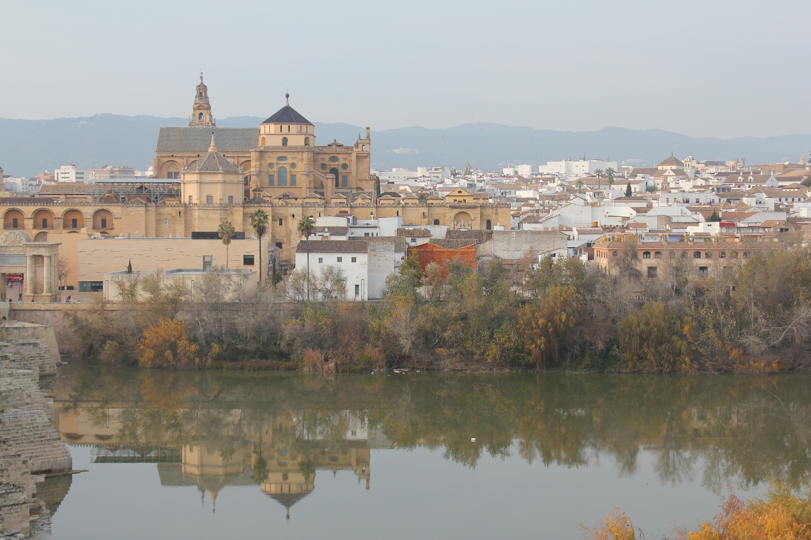

Córdoba ciudad patrimonio
Introduccion
Mezquita-catedral de Córdoba,12 antes «Santa María Madre de Dios» o «Gran Mezquita de Córdoba», actualmente conocida como la Catedral de la Asunción de Nuestra Señora de forma eclesiástica, es un edificio de la ciudad de Córdoba, España.
Se empezó a construir como mezquita en el año 786, con la apropiación por los conquistadores musulmanes de la basílica hispanorromana de San Vicente Mártir y la reutilización de parte de los materiales, quedando reservada al culto musulmán.3 El edificio resultante fue objeto de ampliaciones durante el Emirato de Córdoba y el Califato de Córdoba. Con 23 400 metros cuadrados, fue la segunda mezquita más grande del mundo en superficie, por detrás de la Mezquita de La Meca, siendo sólo alcanzada posteriormente por la Mezquita Azul (Estambul, 1588). Una de sus principales características es que su muro de la qibla no fue orientado hacia La Meca, sino 51º grados más hacia el sur, algo habitual en las mezquitas de al-Ándalus.
En 1238, tras la Reconquista cristiana de la ciudad, se llevó a cabo su consagración como catedral de la diócesis con la Ordenación episcopal de su primer obispo, Lope de Fitero.4 El edificio alberga el cabildo catedralicio de la Diócesis de Córdoba, y por su carácter de templo católico y sede episcopal, está reservado al culto católico. En 1523, bajo la dirección de los arquitectos Hernán Ruiz, el Viejo y su hijo, se construyó su basílica cruciforme renacentista de estilo plateresco.
Hoy todo el conjunto constituye el monumento más importante de Córdoba, y también de toda la arquitectura andalusí, junto con la Alhambra, así como el más emblemático del arte omeya hispanomusulmán. Declarada como Bien de interés cultural2 y Patrimonio Cultural de la Humanidad como parte del centro histórico de la ciudad,5 se incluyó por el público entre los 12 Tesoros de España en 20076 y fue premiada como el mejor sitio de interés turístico de Europa y sexto del mundo según un concurso de TripAdvisor.7 En 2018 rozó los dos millones de visitantes, siendo su récord histórico y convirtiéndolo en uno de los monumentos más visitados de España.

Etapas de construccion
Orígenes cristianos: la Basílica de San Vicente Mártir
Tras la llegada del islam a la península, en el año 714, Muza estableció el reparto del conjunto basilical, en el pacto de capitulación, por el que una parte se dedicó al culto islámico y en otra permaneció el culto cristiano, comprometiéndose a respetar la parte cristiana de la basílica mientras se pagasen los tributos exigidos. Dicha convivencia fue difícil, y no siempre se respetó el compromiso. Así, durante los conflictos entre yemeníes y muladíes en el año 748, las autoridades musulmanas emplearon la parte cristiana para el juicio y condena a muerte de los cabecillas de los yemeníes. Según una versión sucinta del relato tradicional, la mezquita de Córdoba habría sido iniciada bajo el reinado del primer emir omeya Abderramán I entre el 780 y el 785, sobre la planta de la iglesia cristiana, cambiando la orientación de su eje. Sufrió sucesivas ampliaciones en los siglos IX y X y fue concluida bajo mandato de Almanzor. La más importante de las ampliaciones es la de Alhakén II a la que pertenecen los arcos del mihrab. En estos arcos se puede ver la evolución de la construcción: las columnas visigodas con sus arcos de herradura les resultaron demasiado bajos a los musulmanes por lo que decidieron añadir pilares sobre las columnas y disponer arcos más altos sin derribar los anteriores y policromando en rojo y blanco todos con lo que se construyó la célebre y más conocida imagen de la Mezquita de Córdoba. Fue lugar de reuniones a la vez religiosas y políticas pues podía albergar hasta veinte mil personas.Las excavaciones arqueológicas dirigidas por el arquitecto Félix Hernández en 1930 demostraron la existencia en el subsuelo de la Mezquita-Catedral de todo un complejo episcopal que puede datarse entre los siglos IV y VI. Allí se encuentran los restos arqueológicos de la basílica visigótica dedicada a San Vicente Mártir, la domus episcopalis, y la escuela clerical y los servicios de caridad del obispo.9
Mezquita de Abderramán I
La puerta de San Esteban, la más antigua del edificio, fue construida como puerta occidental de la
primera mezquita.10
El inicio de su construcción se debe al primer emir omeya de Córdoba, haciéndose sobre el emplazamiento
de la basílica visigoda de San Vicente Mártir, iglesia construida en el siglo VI, en cuyo solar se
inicia la edificación del oratorio o haram en el año 786.
Esquina suroeste, exterior del muro de la quibla.
Este primer edificio consta, en cualquier caso, de once naves longitudinales orientadas hacia el río
Guadalquivir, cuya anchura es idéntica, a excepción de la central, que conduce al mihrab y las dos de
los extremos. La central ligeramente más ancha que el resto y las laterales ligeramente más estrechas,
aunque estas leves diferencias solo son apreciables en un plano. Estas naves constan de doce
intercolunios que corren en dirección al muro de la quibla.
Los materiales utilizados son de acarreo: fustes de columnas y capiteles procedentes de construcciones y
épocas anteriores (romanos y visigodos), sobre los cuales se elevan pilares rectangulares de sillería
que dotan de más altura al conjunto. Para darle estabilidad a este alzado se recurre a dobles arcos, de
los cuales el inferior, de herradura, hace funciones de entibo, mientras que el superior, de medio
punto, es el que soporta la cubierta. Este sistema, además de la alternancia cromática y material de las
dovelas, rojas de ladrillo, amarillentas las de caliza, parece estar inspirado en el acueducto romano de
Los Milagros (Mérida).
El resultado es un inmenso bosque de columnas coronado de doble arquería que recuerda a un palmeral. El
conjunto se cierra con el muro de la quibla, que a diferencia de la mayoría de mezquitas no está
orientado hacia La Meca sino hacia el sur, hecho éste cuyo motivo está en duda, y que van desde la
inexperiencia y el error en el cálculo, hasta la pura intencionalidad política tras la proclamación de
la independencia política del emirato cordobés, todo apunta a que quisieron imitar a la Mezquita de
Damasco, también de los Omeya, y orientada al sur. Las obras terminaron en el 788.
Hipótesis del templo arriano
En el siglo XX, el escritor Ignacio Olagüe Videla en su célebre y controvertido libro La Revolución islámica en Occidente (1974), supone que Abderramán I no habría construido esta mezquita y que el templo primitivo ya contaba con el famoso bosque de columnas. Añade, además, que originalmente habría sido concebido para el culto arriano. Sin embargo esta postura, recogida en textos de divulgación,11 es rechazada por la investigación académica por carecer de pruebas y manipular los textos.12 Los estudios arqueológicos realizados en el lugar por el arquitecto Félix Hernández demuestran sin lugar a dudas el origen omeya del edificio, erigido sobre la basílica cristiana de San Vicente